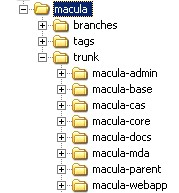

项目构建
3.1 SVN项目创建
在项目启动后，需按项目情况，构建svn版本库，并按系统架构分析出的业务模块，构建项目子业务模块。
在项目命名后，在svn中构建路径trunk，tags，branches，用来进行版本控制。
例如macula平台的svn库目录为：

对项目的开发代码，主要在trunk中开发，在项目开发发布版本后，将通过标签以及branches的方式，记录历史版本，具体的svn操作信息请查看svn的使用指南，这里仅介绍基本的代码结构规划。
3.2 Maven及目录结构
当前Macula平台中的模块，包括三类，普通的java包jar、可发布到J2EE容器中的war以及用于项目管理的pom定义模块。
在一个工程中，通常定义项目所使用的各第三方包以及包的版本，在一个工程内，这些依赖包在所有的模块中必须是一致的，这就需要为所有的子模块创建一个父maven pom模块，用来集中定义这些信息。
在Macula开发平台中，macula-parent就是用来定义这些信息的，整个模块已有一个文件，即maven需要的pom.xml，在该文件中，定义了所使用的所有第三方包的信息，编译信息，模块发布信息等等。
例 3.1. macula-parent中唯一的文件pom.xml
<project xmlns="http://maven.apache.org/POM/4.0.0" xmlns:xsi="http://www.w3.org/2001/XMLSchema-instance"
xsi:schemaLocation="http://maven.apache.org/POM/4.0.0 http://maven.apache.org/xsd/maven-4.0.0.xsd">
<modelVersion>4.0.0</modelVersion>
<groupId>org.macula</groupId>
<artifactId>macula-parent</artifactId>
<version>0.0.1-SNAPSHOT</version>
<packaging>pom</packaging>
<name>Macula Framework Parent</name>
<properties>
<project.build.sourceEncoding>UTF-8</project.build.sourceEncoding>
<jdkLevel>1.6</jdkLevel>
<jvmargs>-XX:MaxPermSize=384m -Xms512m -Xmx1024m</jvmargs>
<hibernate.version>3.6.0.Final</hibernate.version>
<hibernate-validator.version>4.1.0.Final</hibernate-validator.version>
<spring.version>3.0.5.RELEASE</spring.version>
<spring-data-jpa.version>1.0.0.M1</spring-data-jpa.version>
<spring-security.version>3.1.0.RC1</spring-security.version>
<casclient.version>3.2.1-SNAPSHOT</casclient.version>
<slf4j.version>1.6.1</slf4j.version>
</properties>
...
</project>
在macula-parent的maven设置中，指定了maven第三方包获取点：
<repositories>
<repository>
<id>macula-repo</id>
<name>macula-repo</name>
<url>http://maven.infinitus.com.cn:8081/nexus/content/groups/public</url>
</repository>
</repositories>
当前所有macula平台所需要使用的第三方包均可以在上述获取点获得，为了规范第三方包的使用以及避免版本冲突，在进行依赖macula平台开发的业务系统中，只允许依赖macula平台的模块，对于需要依赖第三方包的，需要提交审批，审批通过后，将在上述maven获取点能获取到该第三方报，业务系统方能使用，否则不允许使用。
下面以macula开发平台下的包为例，介绍其他包内容的创建。
除macula-webapp为war项目和macula-docs为文档说明构建项目定义为pom外，其他项目均定义成jar模块格式，通过Eclipse的maven向导可创建jar格式的maven模块。
jar模块目录结构
在maven创建项目后，将创建目录：
src/main/java ：该目录放置java的主要开发代码，即最终运行需要的java类，这个目录的内容最终将打包到jar中。
src/main/resources ：该目录放置除java带的其他资源文件，如xml、properties文件等，这个目录的内容最终也将被打包到jar中。
src/test/java ：该目录主要存放JUnit测试的java代码，用于测试阶段的代码，这个目录的内容将不打包到jar中。
src/test/resources ：该目录存放测试下需要使用的资源文件，如xml、properties文件等，这个目录的内容也不会打包到jar文件中。
重要
需要特别强调的是，测试文件必须放在test目录下，以降低打包jar文件的大小以及代码结构的清晰度，对于编写的JUnit用例，必须放在测试目录。 另外对于src/main/resources中存放文件的目录结构（包括Spring配置文件的放置、Freemarker模块文档的放置等），将在其他相应章节中介绍，这里主要介绍大方向的目录结构。
war模块目录结构
war模块可通过maven-wtp插件，将war模块直接发布到Eclipse定义的Server中，对于war模块，除了具备jar模块的文档结构外，另外增加了src/main/webapp目录，该目录按标准的J2EE应用的目录格式和命名方式。特别的，对于main/webapp下的目录结构，也需要严格按照下列命名：
webapp/META-INF ：下面放置该模块的一些自描述信息。
webapp/resources ：该目录下放置静态内容信息，包括图片文件、javascript文件等。
webapp/WEB-INF ：该目录为标准的J2EE要求目录。
3.3. 文件命名
为了规范项目的开发，在文件命名方面有一定的规则：
java包（文件夹）的命名
java包（文件夹）必须以小写字母命名，同时按照模块名称建立父包，并按照用途可创建controller、domain、repository、service、util、support、vo子包，避免创建晦涩难懂的包名，加大系统的复杂度。
国际化文件
国际化的properties文件，统一放置在resources/i18n目录下，并按模块名称建立子目录，如macula-core的国际化文件必须放置在rseources/i18n/macula-core目录下，这样可避免文件的重名。
Spring配置文件
对Spring的配置文件，必须放置在resources/META-INF/spring目录下，并在命名上按下列要求命名：
- 应用层的命名：按照macula-模块名称-app.xml的方式命名。
- Servlet层的命名：按照macula-模块名-servlet.xml的方式命名。
Freemarker文件
Freemarker文件放置在resources/views目录下，并按模块名称创建子目录。
3.4 自定义目录
在应用开发中，需要自定义目录的情况较少，如无特殊需要，尽量减少自定义目录的情况，自定义目录会增加项目组沟通成本以及维护成本。
对于自定义目录的情况大致有：
为多种环境创建不同的配置
这种情况下，主要使用custom目录创建同名文件，并 在pom.xml中通过定义不同的打包方式，产生如生产环境发布包、测试环境发布包等。
webapp目录下增加其他静态文件
对war模块，对于webapp下需要载入的大量的静态文件以及脚本文件，可能会加入自定义目录。
3.5 配置文件
macula平台下涉及的文件包括：
- macula.properties：开发平台配置文件
- Spring配置文件，将在配置文件章节介绍
- log4j.properties：log4j的配置文件
- freemarker.properties：freemarker模版的配置文件
3.6 依赖包及版本
Macula开发平台自身依赖了大量的第三方包，在业务系统开发中，使用依赖macula平台的模块即可，对于具体的依赖包及版本，可查看macula-parent模块中定义的pom.xml文件。